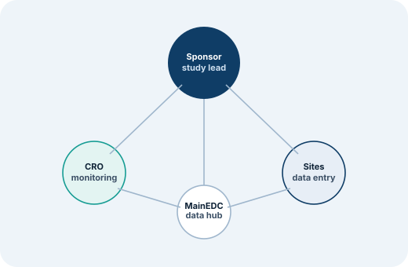

Solutions
One platform, four very different jobs to do
A CRO running ten sponsor studies, a sponsor with one pivotal trial, and a research site collecting daily data all need different things from the same EDC. Pick your role below.
Monitoring budgets get eaten by travel, not insight
100% source data verification means monitors spend most of their time on-site checking data that often turns out to be clean — leaving less time for the studies that genuinely need attention.
- Risk-based monitoring (RBM) directs SDV toward higher-risk sites and fields
- CROs have reported cutting on-site monitoring costs by up to 75%
- One platform across multiple sponsor studies, instead of per-sponsor systems
- Centralized query management across sites and studies
Oversight without owning infrastructure
Building and validating an in-house EDC is a multi-year investment most sponsors don't need to make for a single program — but losing visibility into data quality isn't an option either.
- A validated, audit-ready platform without building one in-house
- Role-based dashboards so sponsor teams keep visibility into data quality and timelines
- SDTM-ready export for statisticians and regulatory submission
- Validation documentation aligned to GAMP 5 available for inspection
Data-entry tools built for data managers, not investigators
Site coordinators and investigators often spend more time fighting an EDC's interface than entering data — especially when connectivity at the site is unreliable.
- Offline data entry for decentralized or low-connectivity sites
- Mobile-friendly data capture via MainEDC WEB Builder forms
- Clear, role-specific views instead of a one-size-fits-all interface
- Training and onboarding support from the DM365 services team
Real-world data arrives in pieces, from everywhere
Registries and real-world evidence programs pull data from EHRs, lab systems, paper records and patient-reported sources — and reconciling all of it into one consistent picture is most of the work.
- MainEDC Register is purpose-built for registries and RWE collection
- OCR and AI-assisted extraction from paper-based source documents
- An event-based data model for consolidating heterogeneous sources
- Standard coding dictionaries (MedDRA, WHODrug, LOINC, ATC) applied consistently
Across every audience
The data model doesn't change — only the view does
Whatever role you're in, you're working against the same validated study database. That's what keeps a CRO's monitoring view, a sponsor's reporting view and a site's entry form all in sync — without manual reconciliation between systems.
See the platform →